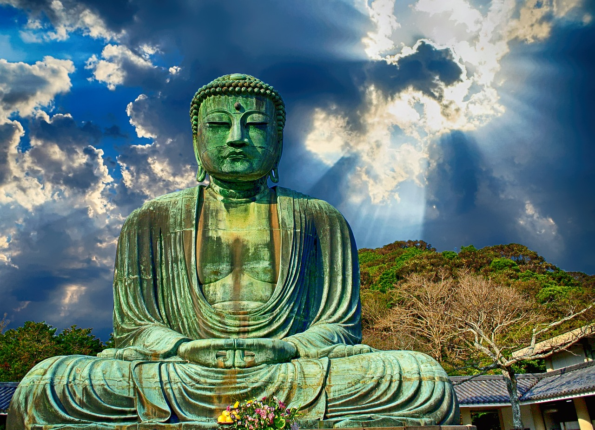

般若
宣化上人 開示
般若就是佛性，佛性就是般若。說大般若，就是說大佛性；說大佛性，就是說大般若，名字雖然不同，但是意思是一樣的。為什麼要這樣說呢？因為般若就是智慧，智慧就是大覺悟，你能大覺悟，就有智慧；不能大覺悟，就沒有智慧。大覺悟就是大佛性。佛是梵語，譯為覺，就是自覺、覺他、覺行圓滿，所以說佛性就是般若。般若有文字般若、觀照般若、實相般若三種，略釋如下：
（１）文字般若：這種文字般若，不是世間上從學校所得的文字般若，而是出世間的文字般若，令你發菩提心，修菩提道，得菩提果，也就是經典的文字般若。
（２）觀照般若：從文字般若，能生起觀照般若。譬如你讀經文，對「如是我聞」四個字，生起疑問：「什麼是如是？什麼是我聞？如是是什麼？我聞是什麼？」於是生起觀照。你讀「如是我聞」之後，便以文尋義，找這個意思，這就是觀照般若。
（３）實相般若：有了觀照般若，就知道如是者，法的本體；我聞者，我聽法的本體這個道理。這是由觀照而達實相，法體如是、法體本空，本空就是實相般若。
你明白這三種般若，也會明白三因佛性。三因佛性，就是緣因佛性、了因佛性、正因佛性。
（１）文字般若就是緣因佛性，以文字為助緣，使你知道這三種佛性，也知道佛性就是般若，般若就佛性。因為這樣，而開發照了實相的善根功德。
（２）觀照般若就是了因佛性。譬如一盞燈，能照亮房子，令你知道這屋子裏有些什麼東西：房子裏有一部《華嚴經》，有佛像，有佛龕，又有八十八佛名號，你都知道了，這是因燈了悟，把一切東西都看清楚了。所以我們應該用像燈一樣的觀照力量，來照自己心內的屋子。有觀照的力量，便產生了因佛性的功能；你沒有觀照般若的力量，便不能明白了因佛性。也不知道在心內的屋子裏，有佛菩薩在教化眾生，有緣覺在修行十二因緣法，有聲聞在修四諦法，有無量諸天在受殊勝妙樂，有無量眾生在顛顛倒倒，有無量阿修羅在鬥爭，有無量畜生在生死輪迴中生了又死，死了又生，有無量餓鬼在偷吃東西，有無量地獄眾生在刀山油鍋裏受酷刑。這些境界都沒有離開你的心，都和你的心相通。地獄裏有十八個大地獄，還有五百個小地獄，你願意到哪個地獄去，隨你的方便。你有了觀照般若的力量，便能把十法界的因緣都明白了。明白之後，當然要選擇善的去做，不善的要放下，這樣就不會墮地獄了。
（３）實相般若就是正因佛性，也就是第一義空的佛性，由照了而達正因，證實相。
怎樣能生佛界？佛是覺，就是覺悟。能覺悟就是佛，不能覺悟就是眾生。所謂「一念覺就是一念佛，念念覺就是念念佛；一念迷就是一念眾生，念念迷就是念念眾生；時時覺就是時時佛，時時迷就是時時眾生。」你能覺悟自己所做的是顛倒事，就是佛；你不能覺悟自己所做的是顛倒事，就是眾生。所以說佛和眾生的界限，就是在覺和迷之間，要做佛？要做眾生？在於你自己的選擇。
怎樣能生菩薩界？簡而言之，常想利益眾生就是菩薩，常想利益自己就是魔鬼。菩薩只知道有他人，不知道有自己；魔鬼只知道有自己，不知道有他人。兩者之間，恰好相反。菩薩知道有眾生可度，但還沒有到無眾生可度的階段。到了佛的境界，根本就沒有眾生可度。為什麼？因為眾生都度盡了，沒有可度的眾生。就是有，也沒有眾生相，不著到相上，這叫掃一切法，離一切相。掃一切法，好像用掃帚把法塵都掃乾淨了；離一切相，就是什麼相都沒有了。你若修六度萬行，就能生到菩薩界。
怎樣能生到緣覺界？你觀察十二因緣法：無明緣行、行緣識，乃至生緣老死。無明為十二因緣法之首，無明是從什麼地方來的？是從貪瞋癡三毒而來。有了無明，就有行；有了行，就有識…等等。如果把無明的根本找到，就把無明的根斬斷，就沒有生死了。怎樣能斬斷呢？就要勤修戒、定、慧三無漏學，就能斬斷三毒的根，把無明變成智慧。有了智慧，便曉得什麼是善？什麼是惡？這樣心就光明，心就清淨了。把無明破了，法身就現出來了，這就是辟支佛。
怎樣能生到聲聞界？你要修四諦法，就要找苦的根源。苦根是在見惑和思惑裏邊，所以要用三十七助道品來消滅見思二惑。見惑有八十八品，思惑有八十一品，把三界的見思二惑消滅之後，才能證到四果羅漢位，這時就達到不生不滅了。以上這是四聖法界。
怎樣能生到天界？你要修五戒十善法，也就是修身口意三業清淨：身有三善，就是不殺、不盜、不淫。口有四善，就是不妄言、不綺語、不惡口、不兩舌。意有三善，就是不貪、不瞋、不癡。有這樣的功德，才可以生天道。但是只能生在地居天，也就是四天王天和忉利天，而不能生到空居天，即夜摩天、兜率天、化樂天、他化自在天。除非有修襌定的功夫，才能一步一步地向上升。從色界十八天生到無色界的非想非非想天時，那就是三界中最高的第二十八層天。如果再接再勵、精進修習襌定，就能跳出三界，脫離分段生死，證到羅漢果位。
怎樣能生人道呢？你若是能諸惡莫作，眾善奉行，就不會失人身。前生修褔慧，褔慧雙足了，就生到富貴家，一切順利，又健康又長壽，相好莊嚴。前生如果不修褔慧，就生到貧窮家，一生坎坷，多疾夭亡，相貌醜陋，這就是因果律。這是一種不變的定律，你做善事就有善報，做惡事就有惡報。因為前生不修，所以今生要受苦，如果再不修，來世還不如今生。如果你發願修行，來生一定比今生好。因為前生修行，所以今生一切安順，如果今生再修行，來生一定比今生還更好。如果不修行的話，來生絕對不如今生。這道理很簡單，人人都可以明白。來生是順或逆，完全由你自己來決定，佛菩薩也幫不了這個忙。
怎樣能不生四惡趣？你若不存鬥爭心，就和阿修羅界斷絕往來。你若不貪，就和畜生界斷絕往來。你若不瞋，就和餓鬼界斷絕往來。你若不癡，就和地獄界斷絕往來。以上是六凡法界。
十法界就是十條路，由你們自己去走，種什麼因，便結什麼果。就看你們有沒有般若智慧，有般若智慧的人，會造種種善業，消種種惡業；沒有般若智慧的人，會造種種惡業，消種種善業。這種般若智慧，人人具有，只看你們會不會運用而已，如果你們會運用，這般若光就普照法界；如果你們不會運用般若的智慧，本來就在你們心中的十法界，你們都不會明白。